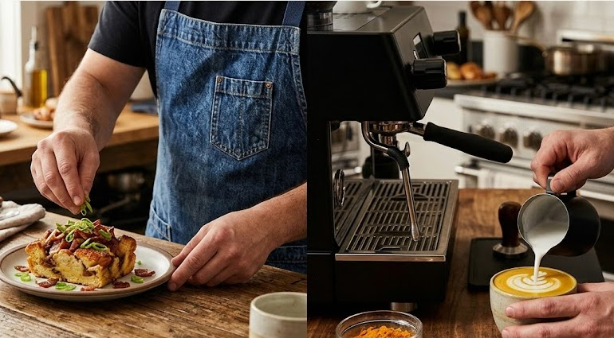
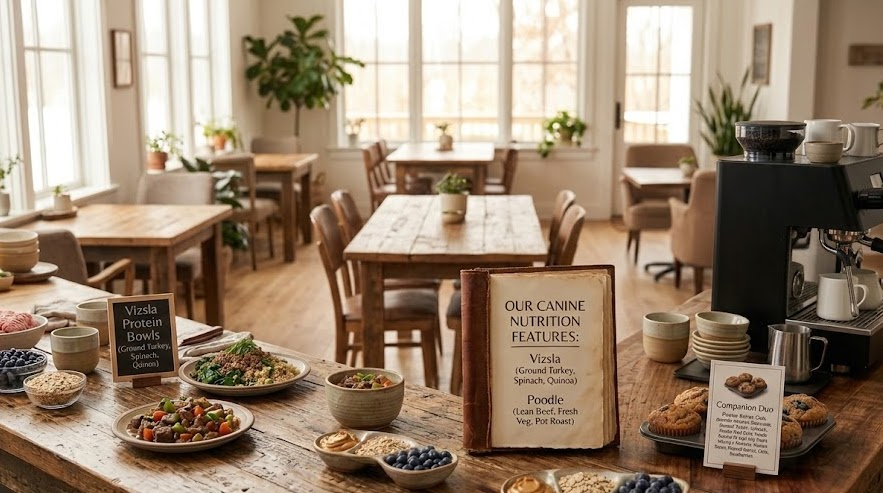
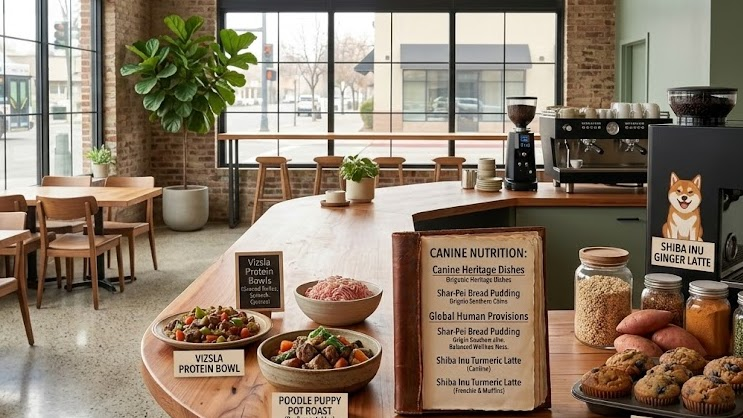
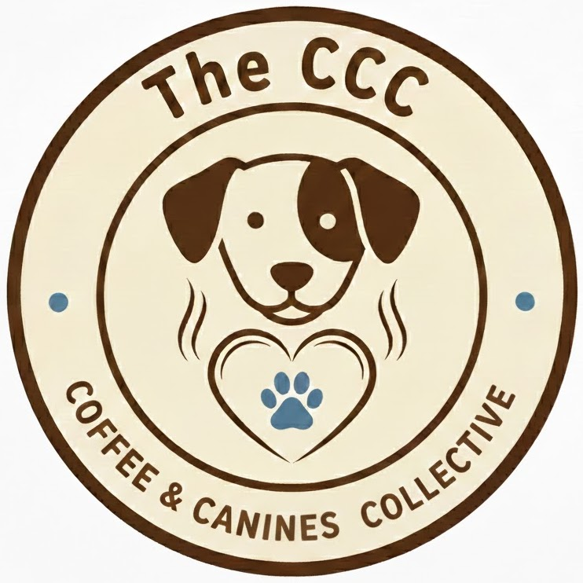

A Curated Taste
Our full seasonal menu is a rotating collection of chef-driven plates and precision-roasted coffees. Below is a sampling of the craft you’ll find at the Collective.
While we’ve highlighted a few of our signature pairings here, our full menu is a deep-dive into canine heritage and modernist craft. We are currently in the kitchen perfecting the rest of our lineup—stay tuned for the full release of our breed-inspired provisions and seasonal Secret Menu rotations.

Human Provisions
The Shar-Pei (Savory Breakfast Bread Pudding)
A Masterclass in Texture & Flavor
Inspired by the distinctive, "wrinkled" look of the breed, this dish is a culinary centerpiece. We take thick-cut Brioche and Hawaiian bread, seared to a golden-brown finish and baked into a rich, savory custard. Folded with premium Gruyère, maple-bourbon glazed bacon, and fresh scallions, it’s a deep, comforting dish that proves breakfast can be both rugged and refined.
The Shiba Inu (Turmeric Ginger "Golden" Latte)
Bold, Bright, and Balanced
Reflecting the vibrant coat and spirited personality of Japan’s iconic forest dog, this signature beverage is as beautiful as it is functional. We blend precision-pulled espresso with steamed milk, house-pressed ginger, and aromatic turmeric. It’s a "Golden" latte that offers a clean, spicy finish—perfect for starting a morning or recharging after a long walk.
The Phu Quoc Ridgeback (Summer Spring Rolls)
Fresh, Technical, and Globally Inspired
A tribute to the rare and athletic ridgeback of Vietnam, these rolls are a showcase of precision Garde Manger work and "Radical Localism." We wrap crisp, seasonal vegetables and aromatic herbs—sourced directly from our Collective partners—in delicate rice paper with vermicelli and fresh mint. It is a light, clean, and technically vibrant dish that celebrates the heritage of a truly unique breed through local Fresno agriculture.
The Afghan Hound (Cardamom & Rose Latte)
Exotic, Elegant, and Fragrant
Inspired by the ancient and regal "King of Dogs" from the mountains of Afghanistan, this selection from our Secret Menu is a masterclass in delicate balance. We infuse our precision-pulled espresso with aromatic cardamom and a whisper of rose water, creating a profile that is both exotic and deeply comforting. It is a sophisticated, floral beverage that mirrors the silky, flowing elegance of its namesake.
The Frenchie (French Toast Sandwich)
Refined, Hearty, and Iconic
Capturing the spirit of France’s most beloved "chunky" companion, this dish is a sophisticated take on a breakfast classic. We use thick-cut, buttery Brioche—perfectly matched to the breed’s sturdy build—to sandwich a savory filling of eggs, bacon or sausage, and melted Gruyère cheese. Finished with a whisper of cinnamon and vanilla and served with our house-made Maple-Bourbon Syrup. A bold, flavorful experience that is quintessentially "Frenchie".
The Samoyed (White Chocolate Mocha)
Fluffy, Bright, and Indulgent
Inspired by the "Smiling Sled Dog" known for its thick, cloud-like white coat, this beverage is a celebration of pure, creamy comfort. We blend rich white chocolate with silky steamed milk and our signature espresso to create a drink as bright and inviting as its namesake. It is a lush, velvety mocha that captures the cheerful and fluffy essence of the Samoyed in every sip.

Canine Nutrition
The Poodle (Puppy Pot Roast)
Elegance in Every Bowl
For the sophisticated companion who deserves a chef-prepared meal. This dish features tender, slow-braised lean beef paired with garden-fresh peas and carrots. The secret is our "Rescue Stock"—a rich, nutrient-dense broth simmered in-house from our human-grade vegetable trimmings. It is high-protein, highly digestible, and serves as the gold standard for canine dining.
The Vizsla (High-Energy Protein Bowl)
Lean, Powerful, and Purposeful
Named for the "Velcro dog" known for its stamina and sleek build, this bowl is designed for the active companion. We combine iron-rich spinach with lean ground turkey and nutrient-dense quinoa. The dish is finished with a touch of our signature "Rescue Stock" to provide deep flavor and essential hydration. It’s a clean, chef-prepared meal that honors the athletic spirit of the breed.
The Dutch Smoushond (Mini Chicken Pot Pies)
Hearty, Handcrafted, and Sustainable
A nod to the rugged and friendly "gentleman’s companion" of the Netherlands, these minis are built with a handmade oat-based crust and packed with tender shredded chicken. By cross-utilizing high-quality proteins from our human lunch service and combining them with fresh peas and carrots, we ensure your dog receives the same culinary respect as the rest of our guests. It’s a rustic, comforting classic that highlights our commitment to a closed-loop, zero-waste kitchen.
Monty’s Muffins (Peanut Butter & Blueberry Oatmeal Muffins)
Nutrient-Dense & Thoughtfully Reimagined
Named for a beloved companion, these muffins are the heart of our "Pivoted" ingredient philosophy. We take over-ripe bananas and blueberries from our Açaí prep and fold them into a hearty batter of quick oats, peanut butter, and local honey. By giving new life to these nutrient-rich fruits, we create a wholesome, antioxidant-packed treat that highlights our commitment to a zero-waste, high-quality kitchen for every member of your pack.
The Azawakh (Protein Power Bowl)
Lean, Strong, and Vital
Inspired by the elegant and swift sighthound of the West African Sahel, this bowl is designed for maximum performance and health. We pair energy-dense quinoa with a protein-rich hard-boiled egg and grilled chicken. To maintain our commitment to sustainability, we incorporate crisp, peeled, and diced broccoli stems cross-utilized from our human lunch preparation. It is a powerful, nutrient-packed meal that honors the resilient spirit of the Azawakh.
The Rescue Stock (Foundational House Broth)
Nutritious, Sustainable, and Essential
At the heart of our mission is a commitment to zero-waste culinary excellence. Our signature Rescue Stock is slow-simmered using high-quality scraps from our human kitchen—including chicken, sweet potato, celery, broccoli stems, and carrot peels—to create a nutrient-dense "doggie jus". It provides a savory, hydration-boosting foundation that bridges the gap between gourmet human preparation and canine wellness.

A Menu Defined By Diversity
At the Collective, we celebrate canine heritage in everything we serve. Every food and beverage item we craft is named after a dog breed whose history or traits align with the flavors in the dish. This shared naming convention serves a greater purpose: to spread awareness for the vast spectrum of dog breeds and to advocate for the appreciation of all dogs, everywhere. Discover the story behind your favorite snack and join us in championing rescue and adoption for every breed.
